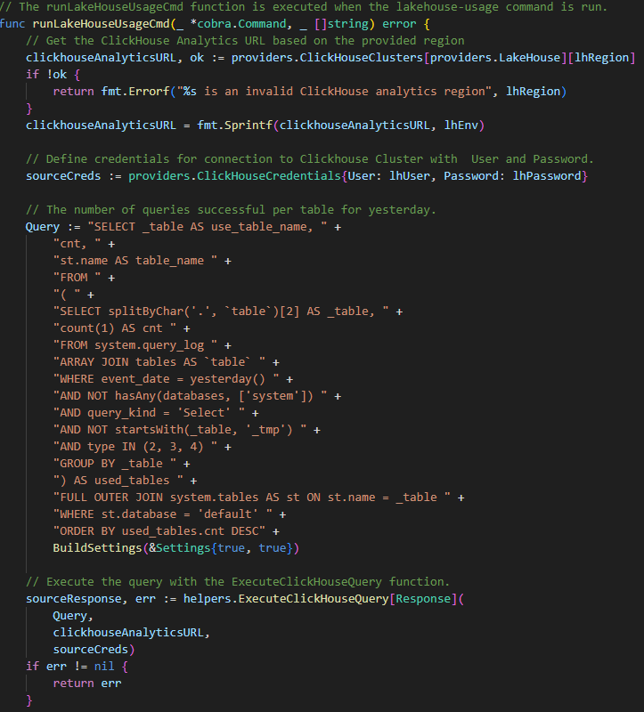

Période : 13 mai au 28 juin 2024
Langages utilisés : GO
Travail : Tout seul
Contexte : Contentsquare utilise plusieurs clusters ClickHouse (une base de données analytique en colonnes) pour stocker et analyser de grandes quantités de données. Cependant, l'équipe manquait d'une vue claire et consolidée sur l'utilisation quotidienne des tables de la base de données, ce qui compliquait la gestion en cas d’incidents.
Objectif : Répondre aux besoins de l'équipe en développant un outil permettant de :
Extrait du code :
